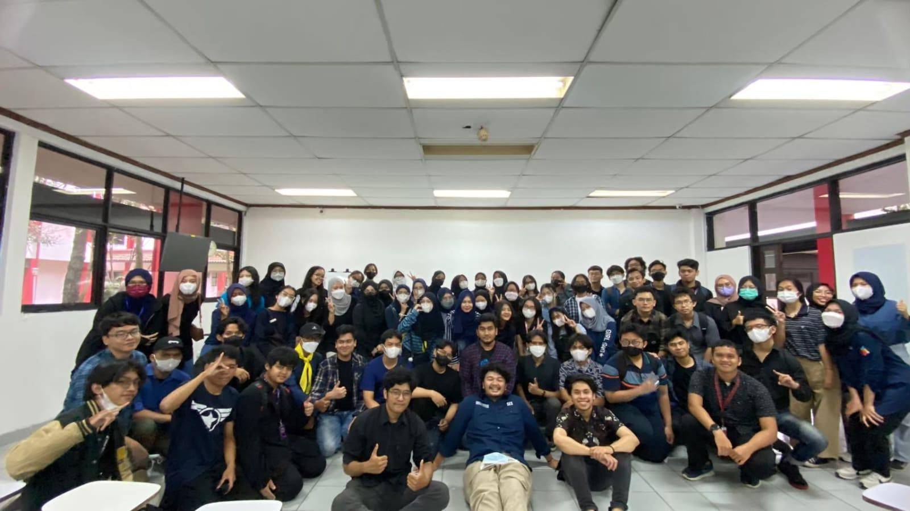

Photo caption: first session + meetup of Student English Society.
[WRITER'S NOTE] I've joined Student English Society, a student group focused on building English communication skills since i was a freshman and i spent over a year as a member of SES.
SES have a lot of branches, and as it happens i joined the storytelling branch. We had weekly classes where we would developed public speaking and storytelling skills through interactive sessions and regular practices.
Every now and then, SES also hold numerous events and workshops aimed at improving english communication in a fun way. Me and my colleague would cosplay as a distinguished english gentleman and we'd act and speak as such.